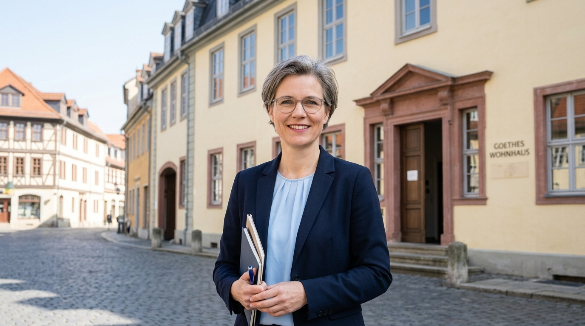
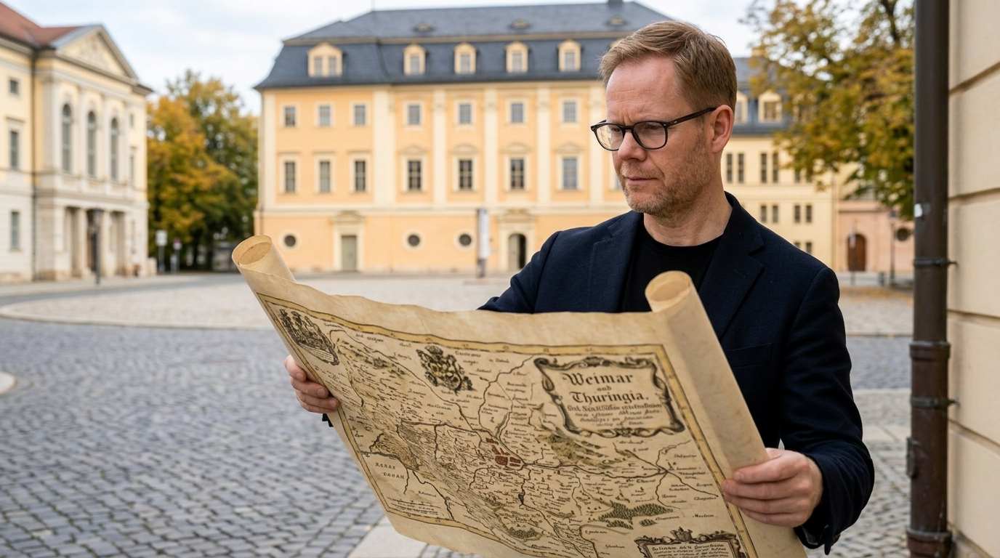
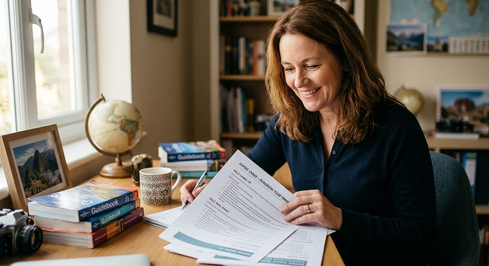
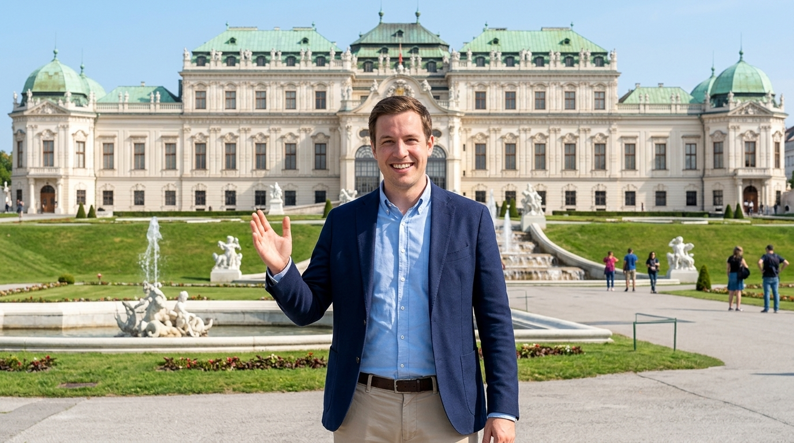
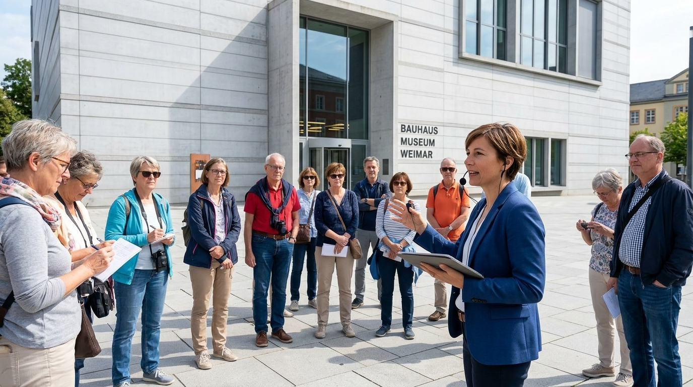
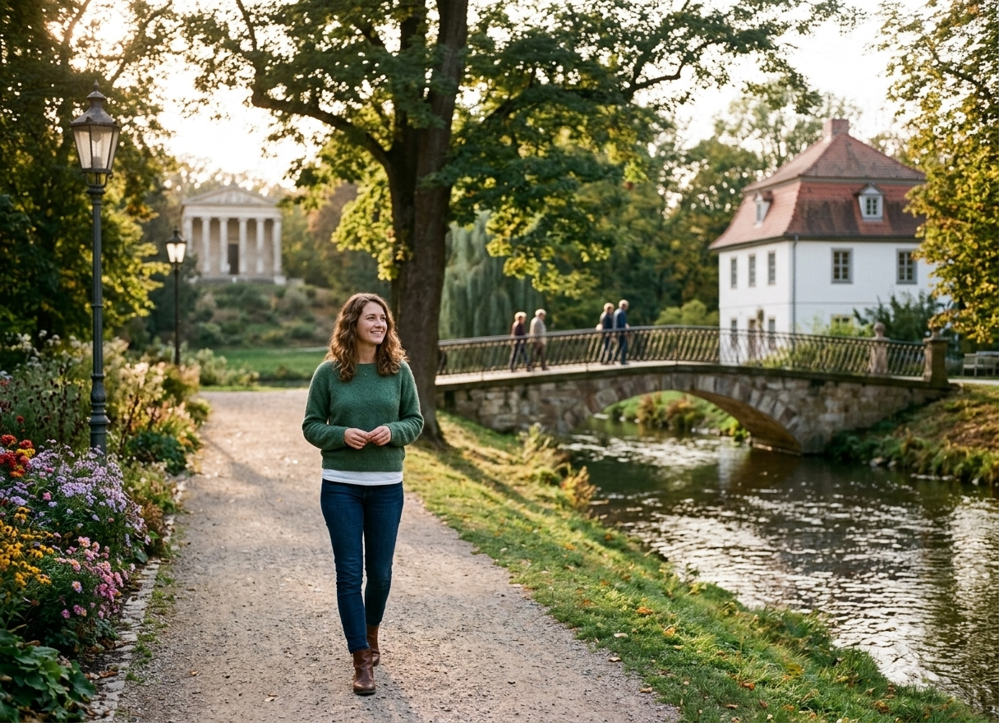

Meet Our Team | The Passionate Local Experts Behind Your Weimar Experience
Dedicated to Bringing Weimar's Heritage to Life
At Weimar Travel agency, our greatest strength is our team. We are a passionate group of resident historians, travel designers, concierge specialists, and local guides united by a shared love for Weimar's extraordinary culture. From crafting custom itineraries to guiding you through historic palaces, meet the dedicated experts who make your journey unforgettable.
Our Team Departments
To ensure every aspect of your travel experience is handled with utmost care and expertise, our agency is structured across six specialized departments:
- Executive & Strategic Leadership – Guiding agency vision, standards of service, and cultural authenticity.
- Custom Itinerary & Travel Advisory – Crafting tailored travel plans, day-by-day routing, and bespoke vacations.
- Cultural & Historical Guiding – Leading private walking tours, architectural visits, and museum explorations.
- VIP Concierge & Guest Services – Managing ground transport, ticket access, dining reservations, and on-site support.
- Group, Corporate & Educational Travel – Coordinating large group logistics, academic cohorts, and special events.
- Local Partnerships & Sustainability – Cultivating relationships with local artisans, historic hotels, and eco-friendly operators.
Meet the Experts
1. Dr. Clara Hoffmann
- Job Title: Founder & Managing Director
- Image:
- Description: Holding a Ph.D. in German Literature, Clara founded the agency to share Weimar's cultural legacy with the world. She leads strategic vision and ensures every experience upholds the highest standards of authenticity.

2. Maximilian "Max" Richter
- Job Title: Head of Cultural Tours & Lead Historian
- Image:
- Description: A certified local historian specializing in the Classical Golden Age and Bauhaus movements, Max designs our guided tour routes and trains our storytelling guides to bring history to life.

3. Sophie Vance
- Job Title: Senior Travel Advisor & Itinerary Designer
- Image:
- Description: With over 8 years in bespoke travel planning, Sophie excels at turning ideas into seamless day-by-day journeys. She tailors every detail to fit each traveler's unique pace and interests.

4. Lukas Weber
- Job Title: VIP Concierge & Guest Experience Manager
- Image:
- Description: Lukas is your primary point of contact during your stay. From coordinating private driver transfers to securing sold-out concert tickets, he ensures every aspect of your trip runs flawlessly.

5. Elena Rossi
- Job Title: Group & Educational Travel Specialist
- Elena manages travel arrangements for academic cohorts, corporate retreats, and large family reunions. She specializes in venue rentals, private lectures, and complex group logistics.

6. Hannah Meyer
- Job Title: Local Partnerships & Sustainability Coordinator
- Image:
- Description: A Weimar native, Hannah connects our travelers with local artisans, boutique family-owned hotels, and hidden cafes, ensuring our tourism footprint directly supports the local community.
